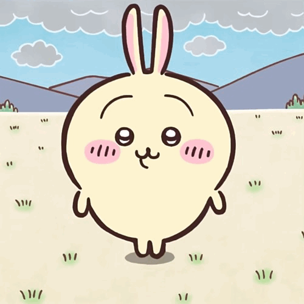
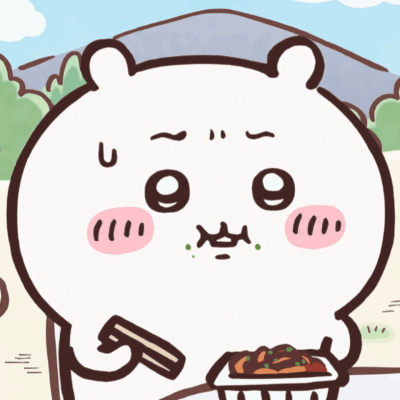
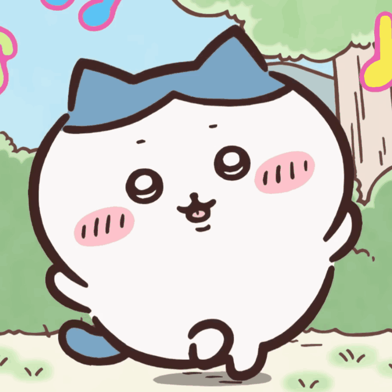
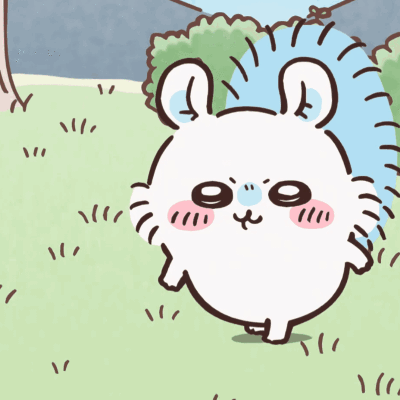
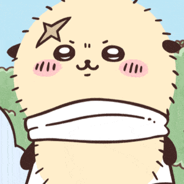
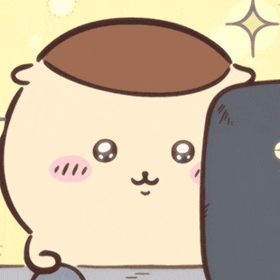

角色介绍



乌萨奇
吉伊
小八
生日：2019年1月22日
主角团之一，吉伊和小八的好朋友。台词常 为“呀哈”“呜啦”等怪声。直觉敏 锐，自由奔放又神秘的存在，住所至 今是谜，武器是两端能发射火药的棍 子。初次登场是在同作者的另一部漫 画中。除草3级。
生日：2017年5月1日
本作主角。台词基本上由简单的音节构成。虽然爱哭但在关键的时刻非常勇敢坚强，运气很好，现在住在抽奖中的白色房子里，武器是粉色的刺叉。非常喜欢自己的好朋友哈奇和乌萨奇。现在在为了除草5级努力学习中。
生日为2020年5月1日
主角团之一，吉伊和乌萨奇的好朋友。主角团中唯一能完整使用人类语言说话的存在。好奇心旺盛的乐天派，偶尔会露出天然的一面，住在山洞里，武器是蓝色的刺叉。吉他弹唱了动画的片尾曲《自言自语》：除草5级。“成为站在球场上时间最长的人“这一目标迈进。



飞鼠
海獭
栗子
生日：2020年7月22日
总是在装可爱，同时行为却非常原始粗暴。经常给劳动铠添麻烦。出场时从大强那里夺走了什么东西而被追赶，仔细看的话会发现原来是……？由于名字里带上了桃字也被称为桃鼠。
讨伐排名第一，吉伊和哈奇憧憬的存在。
台词几乎只有“哈——”。看起来很可爱，行为却很大叔，出场时总是在喝酒（动画更改为饮料）和享用美食。另一方面也很会照顾人，经常把自己吃的美食分给吉伊它们吃。